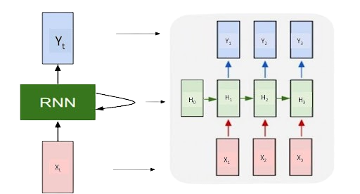

Vanilla Recurrent Neural Networks (RNNs)#

Overview#
Convolutional Neural Networks (CNNs) excel at tasks like image classification, where fixed-size inputs correspond to fixed-size outputs. However, they face challenges with variable-length sequences, such as time series, text sequences, and image sequences. Recurrent Neural Networks (RNNs) come to the forefront as a solution for processing sequential data.
RNNs find application in diverse fields such as speech recognition, music generation, sentiment analysis, video processing, and text analysis and translation. Their ability to handle sequences makes them a powerful tool in capturing temporal dependencies.
The term Vanilla RNN is often used to refer to the basic form of recurrent neural network with a single hidden layer and without architectural enhancements. Vanilla RNN has a simple architecture consisting of an input layer, a recurrent hidden layer and an output layer.
A basic RNN processes a time series of input data \(\boldsymbol X\) by estimating the output \(\boldsymbol o_t\) given the input vector \(\boldsymbol x_t\) and the hidden state vector \(\boldsymbol h_t\). The hidden state is updated at each time step. It acts as a memory of previous time steps allowing the network to capture sequential patterns.

For instance, consider a natural language processing task where \(\boldsymbol X\) is a sequence of words in a sentence, \(\boldsymbol x_t\) is the word at position \(t\), and \(\boldsymbol o_t\) represents the predicted probability distribution over the vocabulary for the next word in the sequence. RNN learns from the context of previous words, using the hidden state to generate predictions for the next word in the sentence.
Forward Pass#

Consider a minibatch of inputs \(\boldsymbol x_t\) \(\in\mathbb{R}^{n \times d}\) at time step \(t\). Each row of \(\boldsymbol x_t\) corresponds to one example at time step \(t\) within a minibatch of \(n\) sequence examples. The weight parameter \(\boldsymbol W_{xh}\) \(\in \mathbb{R}^{d \times h}\) and bias parameter \(\boldsymbol b_h\) are applied to the current input. Additionally, let \(\boldsymbol h_t\) \(\in \mathbb{R}^{n \times h}\) denote the hidden layer output at time step \(t\). The calculation of the hidden layer output, \(\boldsymbol h_t\) at the current time step, \(t\) is determined by:
Here, \(\phi\) is an activation function of the hidden layer output. In contrast to MLP, we preserve the hidden layer output \(\boldsymbol h_{t-1}\) from the previous time step. By introducing a new weight parameter \(\boldsymbol W_{hh}\) \(\in \mathbb{R}^{h \times h}\), we define how to use the hidden layer output from the previous time step in the current time step. Since the hidden state at the current time step uses the same definition as the previous time step, the computation involves recurrence which is why the model is called recurrent neural network.
For time step \(t\), the output of the output layer is computed similarly to MLP:
Here, \(\boldsymbol o_t \in \mathbb{R}^{n \times q}\) represents the output variable, \(\boldsymbol W_{hq} \in \mathbb{R}^{h \times q}\) is the weight parameter, and \(\boldsymbol b_q \in \mathbb{R}^{1 \times q}\) is the bias parameter. In the case of a classification problem, the softmax function can be applied to \(\boldsymbol o_t\) to compute the probability distribution of the output categories. As you can see, hidden state at the current time step, \(\boldsymbol h_t\), does not only participate in computing hidden state at next time step \(t+1\), but is also used in output computation at current time step, \(\boldsymbol o_t\).
Note
RNNs consistently employ the same set of parameters, \(\boldsymbol W_{hx}, \boldsymbol W_{hh}, \boldsymbol W_{hy}, \boldsymbol b_h, \boldsymbol b_q\), across different time steps. This parameter reuse ensures that the computational cost of parameterization remains constant, irrespective of the number of time steps.
Important
While we, and a lot of sources, focus on many-to-many paradigm, where sequences are processed, and outputs are generated at each time step as we discussed above, it is important to highlight flexibility of RNNs to different input-output models. RNNs can process different sequence-to-sequence architectures, such as one-to-one, one-to-many, many-to-one.
Training Vanilla RNNs.#
Data preprocessing#
Let’s do some predictions. Let’s import and preprocess the IMDB movie review sentiment classification dataset. This is a dataset of 25,000 movies reviews from IMDB, labeled by sentiment (positive/negative). Reviews have been preprocessed, and each review is encoded as a list of word indexes (integers). num_words limits the vocabulary size to the most frequent 30,000 words. maxlen sets the maximum length of each review to 50 words.
num_words = 30000
maxlen = 50
(X_train, y_train), (X_test, y_test) = imdb.load_data(num_words=num_words)
Pad sequences to ensure they have the same length. This is necessary for creating a consistent input size for the neural network. Also convert the target labels to one-hot encoded format. This is necessary for categorical classification tasks.
X_train = pad_sequences(X_train, padding='post', maxlen=maxlen)
X_test = pad_sequences(X_test, padding='post', maxlen=maxlen)
y_train = to_categorical(y_train, num_classes=2)
y_test = to_categorical(y_test, num_classes=2)
Finally let’s split the training data into training and validation sets for monitoring model performance during training.
X_train, X_val, y_train, y_val = train_test_split(X_train, y_train, test_size=0.3, random_state=42)
print(X_train.shape, X_val.shape, y_train.shape, y_val.shape)
(17500, 50) (7500, 50) (17500, 2) (7500, 2)
Model Architecture#
We build a sequential neural network model with an embedding layer, a SimpleRNN layer, dropout for regularization, and a dense layer with softmax activation for binary classification.
Configure the model for training by specifying the loss function, optimizer, and metrics to monitor.
adam = Adam(learning_rate=0.001)
model.compile(loss='categorical_crossentropy', optimizer=adam, metrics=['accuracy'])
WARNING:absl:At this time, the v2.11+ optimizer `tf.keras.optimizers.Adam` runs slowly on M1/M2 Macs, please use the legacy Keras optimizer instead, located at `tf.keras.optimizers.legacy.Adam`.
WARNING:absl:There is a known slowdown when using v2.11+ Keras optimizers on M1/M2 Macs. Falling back to the legacy Keras optimizer, i.e., `tf.keras.optimizers.legacy.Adam`.
Implement early stopping to monitor the validation loss and stop training if it doesn’t improve for a certain number of epochs (patience).
Training the Model:#
Train the model using the training data. The training is monitored on the validation set, and early stopping is applied.
history = model.fit(X_train, y_train, epochs=10, batch_size=50, verbose=2, validation_data=(X_val, y_val), callbacks=[early_stop])
Epoch 1/10
2023-12-15 11:49:33.534800: W tensorflow/tsl/platform/profile_utils/cpu_utils.cc:128] Failed to get CPU frequency: 0 Hz
350/350 - 4s - loss: 0.5331 - accuracy: 0.7239 - val_loss: 0.4371 - val_accuracy: 0.8013 - 4s/epoch - 12ms/step
Epoch 2/10
350/350 - 4s - loss: 0.2714 - accuracy: 0.8927 - val_loss: 0.4779 - val_accuracy: 0.7949 - 4s/epoch - 11ms/step
Epoch 3/10
350/350 - 4s - loss: 0.1055 - accuracy: 0.9627 - val_loss: 0.6275 - val_accuracy: 0.7625 - 4s/epoch - 11ms/step
Epoch 4/10
350/350 - 4s - loss: 0.0418 - accuracy: 0.9878 - val_loss: 0.9003 - val_accuracy: 0.7813 - 4s/epoch - 11ms/step
Evaluate the Model:#
Use the trained model to make predictions on the test set and evaluate its accuracy using the ground truth labels.
y_pred = model.predict(X_test, verbose = 0)
y_test_ = np.argmax(y_test, axis=1)
y_pred_ = np.argmax(y_pred, axis=1)
accuracy = accuracy_score(y_test_, y_pred_)
print("Test accuracy:", accuracy)
Test accuracy: 0.8012
The job is done. Our model now can predict sentiment of a movie review with 80% accuracy.
Input-output relations in the RNNs#
Basing on the sizes of input and output, the next classification of input-output relations in the RNNs takes place.
One-to-one#
This is the classic feed forward neural network architecture, with one input and we expect one output. One-to-one relationship can be formulated like this:
where \(\boldsymbol D\) is the size of the input vector, and \(\boldsymbol C\) is the output vector. We usually take MSE as the our loss function in such cases:
An one-to-one relationship is applicable classifying images into categories (e.g., cat, dog, bird) or recognizing handwritten digits.
One-to-many (Vec2Seq, sequence generation)#
One-to-many relationship can be formulated like this:
where \(\boldsymbol D\) is the size of the input vector, and the output is an arbitrary-length sequence of vectors, each of size \(\boldsymbol C\). The loss function for a one-to-many relationship can be expressed using the cross-entropy loss, which is commonly used for sequence generation tasks. The total loss for the entire sequence is equal to the overall sun of loss function for all stages:
An one-to-many relationship is useful for generating a descriptive caption for an input image, creating a musical composition or converting spoken language into written text with word-level timing information.
Many-to-many (Seq2Seq, sequence translation)#
In this case we consider learning functions of the form
We consider two cases: one in which \({T}^′ = T\) , so the input and output sequences have the same length (and hence are aligned), and one in which \({T}′\neq T\) , so the input and output sequences have different lengths.
Еhe loss value in this relationship is to be computed at each time step for all the training examples and accumulated in one variable for the overall loss such as:
Many-to-many relatiions is most common for machine translation tasks or generating textual descriptions for video sequences.
Many-to-one (Seq2Vec, sequence classification)#
Assume that we have a single fixed-length output vector \(\boldsymbol y\) we want to predict, given a variable length sequence as input. Thus we want to learn a function of the form:
As it’s a classification problem, the cross-Entropy Loss is also used to compute the loss value:
We can meet such relationship in the determining the sentiment of a text, or assigning a document or a sentence to one of several predefined categories.
Backpropagation through time (BPTT)#
Recurrent neural networks use backpropagation through time (BPTT), which means forwarding through entire sequence to compute losses, then backwarding through entire sequence to compute gradients and update the weights accordingly.
Recall that the input and the hidden state are be concatenated before being multiplied by one weight variable in the hidden layer. Thus, we use \(\boldsymbol w_h\) and \(\boldsymbol w_o\) to indicate the weights of the hidden layer and the output layer, respectively. As a result, the hidden states and outputs at each time step are
where \(f\) and \(g\) are transformations of the hidden layer and the output layer, respectively. Hence, we have a chain of values \(\{\ldots, (x_{t-1}, h_{t-1}, o_{t-1}), (x_{t}, h_{t}, o_{t}), \ldots \}\) that depend on each other via recurrent computation. The forward propagation is fairly straightforward. All we need is to loop through the \((x_{t}, h_{t}, o_{t})\) triples one time step at a time. The discrepancy between the output \(\boldsymbol o_t\) and the desired target \(\boldsymbol y_t\) is evaluated by an objective function across all the \(T\) time steps as:

Gradient Calculation#
For backpropagation, things are a bit trickier, especially when we calculate gradients with regard to the parameters \(w_h\) of the objective function \(\mathcal L\) . To be specific, by the chain rule,
The first and the second factors of the product in (2) are easy to compute. The third factor \(\partial h_t/\partial w_\textrm{h}\) is where things get tricky, since we need to recurrently compute the effect of the parameter \(w_h\) on \(h_t\). According to the recurrent computation in (1), \(h_t\) depends on both \(h_{t-1}\) and \(w_h\), where computation of \(h_{t-1}\) also depends on \(w_h\). Thus, evaluating the total derivate of \(h_t\) with respect to \(w_h\) using the chain rule yields
To derive the above gradient, assume that we have three sequences \(\{a_{t}\},\{b_{t}\},\{c_{t}\}\) satisfying \(a_{0}=0\) and \(a_{t}=b_{t}+c_{t}a_{t-1}\) for \(t=1, 2,\ldots\). Then for \(t\geq 1\), it is easy to show
By substituting \(a_t\), \(b_t\), and \(c_t\) according to
the gradient computation in derivative satisfies \(a_{t}=b_{t}+c_{t}a_{t-1}\). Thus, per a_t, we can remove the recurrent computation in derivative with
While we can use the chain rule to compute \(\partial h_t/\partial w_\textrm{h}\) recursively, this chain can get very long whenever t is large. In practice, an approximation called truncated BPTT is used, which is essentially running forward and backward through chunks of the sequence instead of the whole sequence.
Vanishing or exploding of gradient#
Depending on the size of \(\boldsymbol w_{h}\), the gradient can either vanish or explode over time:
For matrix \(\boldsymbol w_{h}\):
If the largest singular value < 1: vanishing gradients.
If the largest singular value > 1: exploding gradients.
To address the exploding gradient problem a technique called radient clipping is used. Gradient clipping imposes a constraint on the magnitude of the gradients, preventing them from exceeding a predefined threshold. If the L2 norm of the gradients exceeds the threshold, it scales down all gradients proportionally to ensure that the overall norm is within the specified limit.
\( \nabla_{\text{clipped}} = \frac{clip\_value}{\max(clip\_value, \lVert \nabla \rVert}) \cdot \nabla \)
where:
\( \nabla_{\text{clipped}} \) is the clipped gradient vector
\( clip\_value \) is the specified threshold
\( \lVert \nabla \rVert \) is the L2 norm of the gradient vector.
Considering more advanced RNN architectures like Long Short-Term Memory (LSTM) or Gated Recurrent Unit (GRU) is a common and effective approach to address the vanishing gradient problem in traditional RNNs.